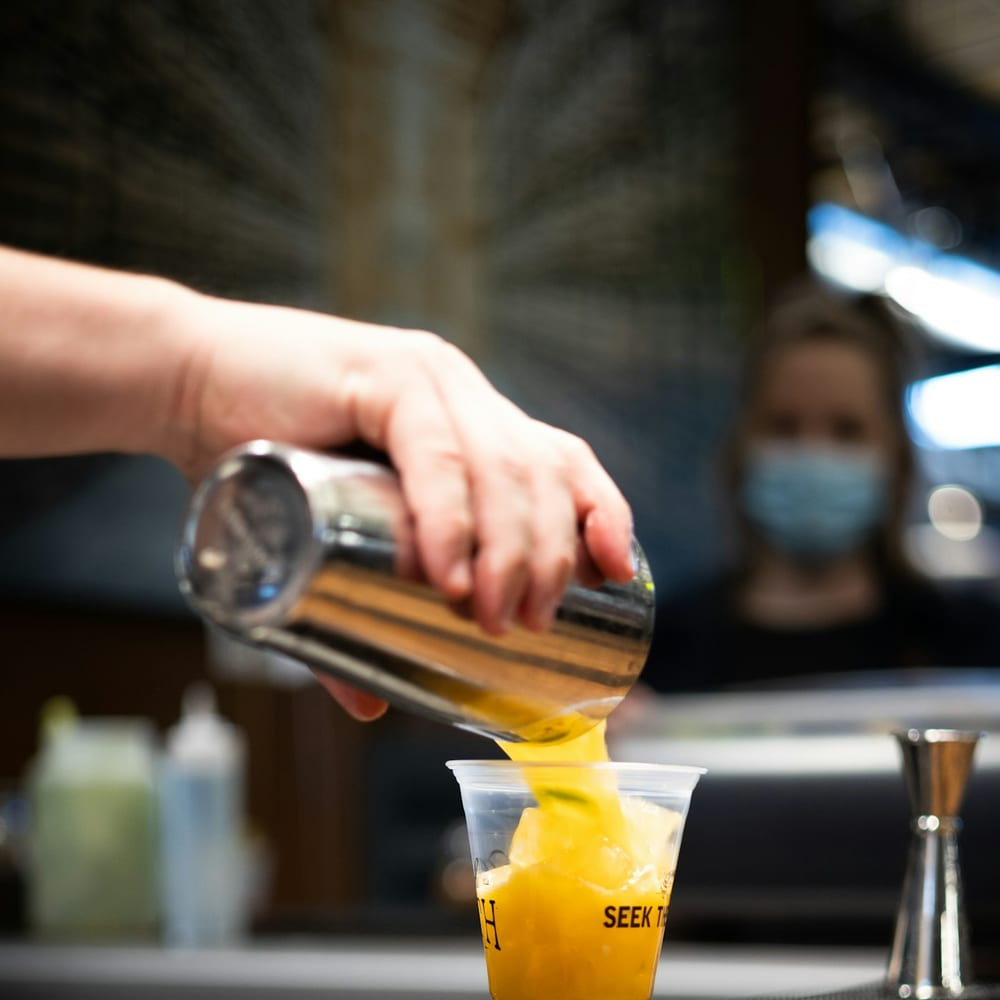

How a Green Sunrise gets from the crate to the bottle

Every Green Sunrise starts at the sink. The cucumber, romaine, kale, green apple, lemon and ginger are washed, trimmed and chopped small, then wrapped in press cloths and squeezed slowly under a hydraulic press rather than spun against a blade.
We bottle each order as it is pressed, so a juice that leaves the counter at 7:15 was still a pile of produce at 7:05. That is also why the colour is so bright, and why the flavour is grassy and clean with a sharp finish from the ginger and lemon.
A sixteen ounce bottle is best the day you buy it, so we press in small batches through the morning. If you would like to watch, ask at the counter on NW 23rd Ave and we will show you the press.